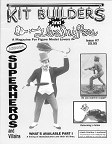

"I'd rather be accused of pleasing the audience than the critics. I'm proud of what I've done."
Aaron Spelling.
Greetings and welcome to issue #7. I borrowed that quote from Mr. Spelling because it conveys my thoughts about this magazine. As you will read in this issue there is some controversy on the recasting issue. Is some recasting OK? Or should anyone in possession of one be Blacklisted? As you will see people have varied opinions about it. Also this magazine response on this issue is included. Whether a "please all" answer can be found remains to be seen.
"What's available" you ask? We did our best to try and answer that for you. The amount of kits out there even amazed us. So many that we had to split the article into two parts. Company's are listed in alphabetical order, those absent from this issue will appear in issue #8.
For those of you wanting to try your hand at sculpting Wayne"The Dane" Hanson gives you a few pointers. Joseph Jobe shows you how to "bend" Catwoman to your desires.
Plus what ever other stuff we came up with! Enjoy!
Gordy!!!
The Gremlins in the Garage webzine is a production of Firefly Design. If you have any questions or comments please get in touch.
Copyright � 1994-2026 Firefly Design.